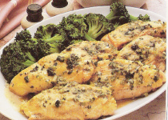

Chicken Breasts Diane

Directions
- Place chicken breast halves between sheets of plastic wrap. Pound slightly with mallet. Sprinkle with salt and pepper.
- Heat 1 tbs each of oil and butter in a large skillet.
- Cook chicken over high heat for 4 minutes on each side. Do not cook longer or they ill be overcooked and dry. Transfer to warm serving platter.
- Add chives or green onion, lime juice, parsley and mustard to pan. Cook 15 seconds, whisking constantly.
- Whisk in broth. Stir until sauce is smooth. Whisk in remaining butter. Serve immediately.
https://baron-3dl.github.io/normans-kitchen/recipe/chicken-breasts-diane.html